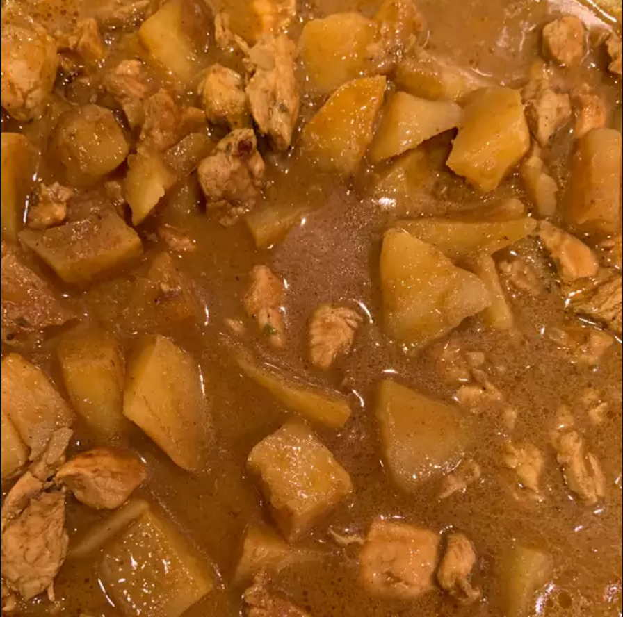

Curry Chicken

Description
Curry chicken is something that I will not stop craving. It has such a strong
flavour with its spice. This coupled with the texture of the chicken is just impeccable.
It has a little bit of heat, so probably do not serve to small children. Enjoy!
Ingredients
- 1 tablespoon yellow curry paste
- ½ cup chicken broth, divided
- 1 teaspoon white sugar
- 1½ teaspoons curry powder
- ½ teaspoon salt
- 4½ teaspoons light soy sauce
- 1 (5.6 ounce) can coconut milk
- 1 tablespoon canola oil
- 3 skinless, boneless chicken breast halves, sliced
- 2 teaspoons minced garlic
- 1 teaspoon minced fresh ginger
- 1 onion, sliced
- 2 potatoes - peeled, halved, and sliced
Steps
- In a bowl, mash the yellow curry paste with about 2 tablespoons of chicken broth to help dissolve the paste;
whisk in remaining chicken broth, sugar, curry powder, salt, light soy sauce, and coconut milk. Set aside.
- Heat a wok or large skillet over high heat for about 30 seconds; pour in the oil. Let the oil heat until shimmering,
about 30 more seconds. Stir the chicken, garlic, and ginger into the hot oil; cook and stir until the chicken has begun
to brown and the garlic and ginger are fragrant, about 2 minutes. Stir in the onion and potatoes, toss all ingredients in
the hot oil, and pour in the sauce mixture. Bring the sauce to a boil, reduce heat, and cover the wok. Simmer until the
chicken is cooked through and the potatoes are tender, 20 to 25 minutes.
back